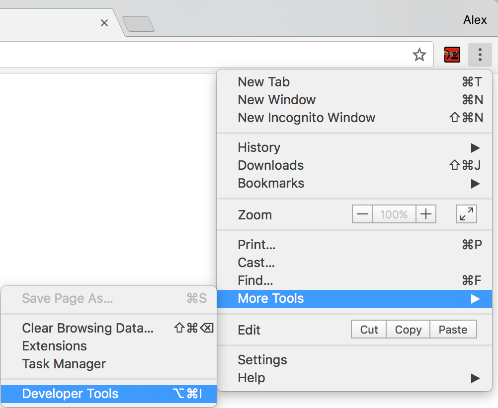
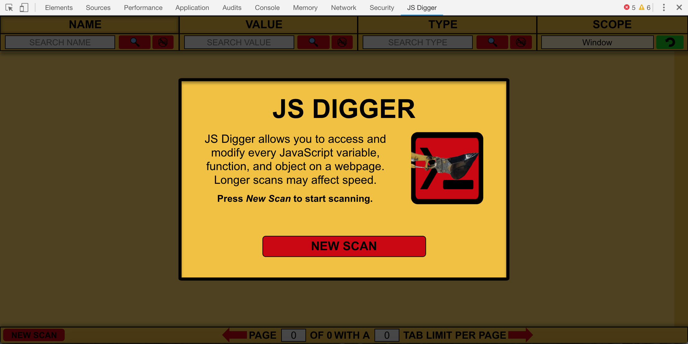
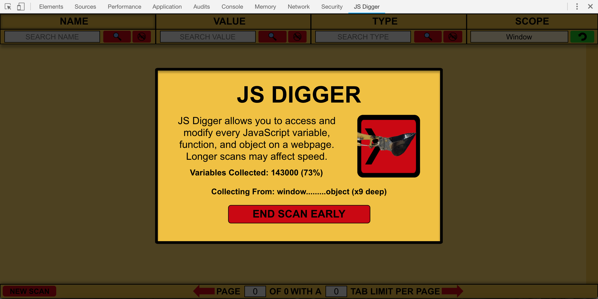
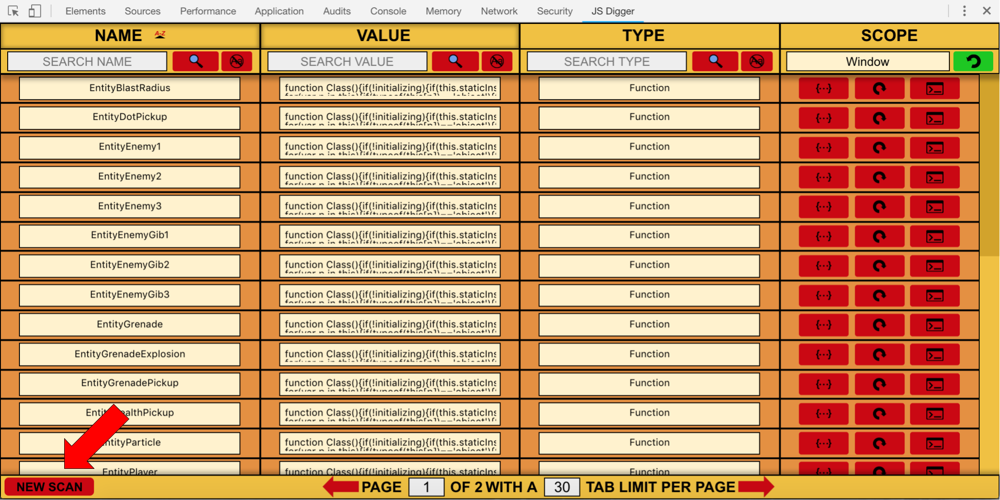

-
Open Chrome Developer Tools:

-
Navigate to the JS Digger tab:
-
Press New Scan to start scanning:

-
Wait as JS Digger scans the page:

-
Use JS Digger to search through or modify the webpage's variables, functions, and objects.
Press New Scan to update the last scan.

WATCH THIS VIDEO TUTORIAL!